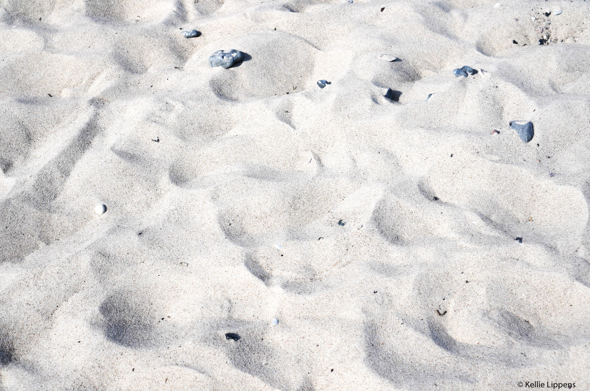

'The Way' is a site-specific performance art piece,
presented as a social experiment│2018
What if an object or a place could be transformed by the people that it came in contact with it?
We make small and big choices in our everyday lives. How does that affect ourselves and the others around us, for good or bad? Is there a clear line between those two states? Would you make a different choice if someone was looking at you? Is it allowed to cross the line to reach the picture on the other side? Is it a good or bad decision
to preserve the line that others made? Can you find a way to cross the line without disturbing it?
IDEM 22 participants were divided in two groups, asked to walk down to the beach, and turn left. There, they encountered a smooth line on the sand, around three meters wide, going from the sea shore to a small barrier made with metal tubes and a rope on the other side. Approximately ten meters across the smooth sand line, there was a small double sided picture frame. You could see it from that distance, but not identify the image. One of the frames was facing the participants and the smooth beach, whilst the other frame faced the opposite direction towards the beach in its natural state. Both frames were on a pole, supported by a stack of black pebbles from the beach. Upon approaching the line from the right, participants had to make a decision whether to cross or not.
After a couple of minutes, the first group crossed the line towards the pictures, making marks on the sand. They were then invited to stand on a neutral zone, behind the small barrier of metal tubes and rope, and watch the second group from there.
We made the smooth line in the sand again for the second group. Creating the smooth line in the sand was also part of the performance, we made specific tools for the task. The second group, also crossed, in a shorter wait period. Lastly, everyone was invited to restore the beach in its original state.
In collaboration with:
Carina Gaertner, Germany
David Geraerts, Belgium
Dimitrij Haak, Germany
Idan Herbet, Israel
Kellie Lippens, Belgium
Letícia Gomes, Brazil/USA
Lucas Boelter, Germany